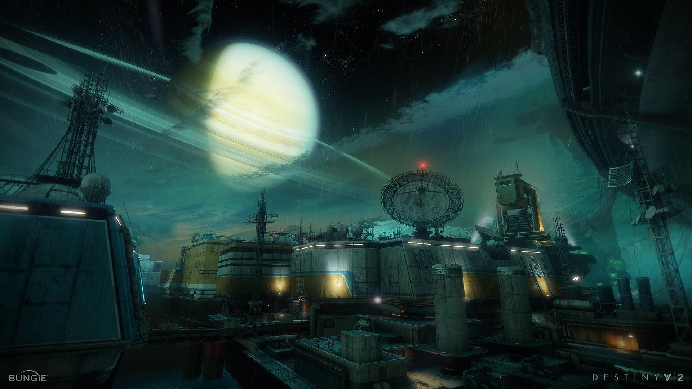
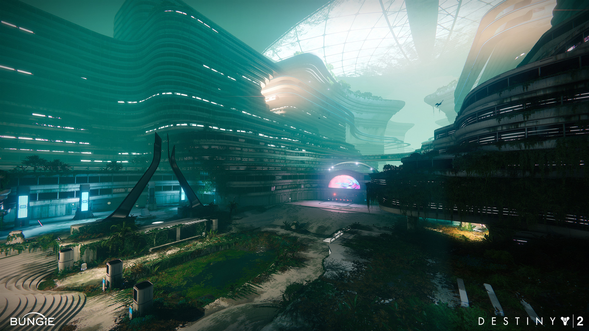

"It's real," Mia van der Venne decides. "We evacuate. Citizens first, then the old guard. And we assume that we're never coming back."
No one breathes.
Down beneath their meeting table, pouches of farmed salmon, beef en culture, buttered carrots, and bok choy drift in the slow turbulence of the sous-vide bath. On Mia's one hundredth anniversary as the New Pacific Systems and Facilities Administrator, she cashed in all (well, not quite all) her favors and installed a pocket restaurant beneath her table on the command deck. She liked the edible metaphor—the idea of watching your food slow-cook all day before the meal. Savor the future you're making.
If she's right about what's happening now, then there will be no more long-term thinking, no more patience, and maybe no future at all.
She waits for Xiana to boil over first. Xiana's the water ocean expert. She has the most to lose.
Finch-tiny Xiana McCaig slams her fists down with not a tenth the strength that her chimp-splice muscles could summon. "Now? NOW? We can't leave now! We just finished the borehole—we're ONE DAY from a crewed expedition into Titan's biggest secret! And you want us to just leave it all?"
"I do," Mia says, sadly.
Maury Yamashita, her lead diver, leaps in with the details she can always trust him to catch. "Boss, if we abandon the borehole and the water lock, all the equipment's down there bathing in liquid methane, hydrogen sulfide, carboxylic acid… Leave it too long, and we'll lose everything."
"There are almost three million people on this arcology and its rigs." Connectivity supervisor Ismail Barat's Zen-shura training distills his attention down to a single laser-bright point; he is here with Mia, even as his brain drifts on a hundred different data feeds. "If you're serious about evacuating, we'll need to slot people into SMILE pods and move them as bulk freight. It's the only way to get the population out. There'll be economic damage. There'll be deaths. If this is a false alarm—"
"It's not a false alarm," the Good Man says.
This voice Mia didn't expect, but only because he's the new guest at her table. David Miguel Korosec. A man who's literally never harmed a fly, who won't eat plants lest he destroy a sacred entropy pump. Poor David. He came here to make first contact with new life, the wonders that flourish not in Mia's ocean—the methane sea of Titan's surface—but in the enormous water world that lies below Titan's 50-kilometer ice shell. He is an ethicist. He wanted to help them do it right.
Xiana crosses her arms. Her recombinant muscles make lean knots at the shoulder anchors, where her bones are more than bone. "How do you know?"
Korosec gives her his full attention, respecting her question. He is a tall, graceful, dark-eyed man with lashes so thick he seems like he's wearing permanent eyeliner. Mia remembers something from his book about cognitive empathy: show that you have made a model of their thought; show that you have listened to it. He responds, "Since I don't have any more information than you, how could I possibly be so certain?"
"Yes," Xiana says, impatiently. "That's what I asked."
He holds her gaze. Mia thinks that he may have annoyed her but also that he knows he's done nothing wrong. "The AIs who issued the evacuation order use a hammer-forged extrapolation of human morality. It is tested in trillions of simulations, under the wildest circumstances imaginable, to be sure their moral decisions agree with human values. They're not just rationality pumps. They CARE. They care the way a perfect human being with infinite compassion for all things would care. They couldn't issue an evacuation order unless it was Right. This is not a false alarm."
Everyone has had their say. Mia puts her hand down on the cold tabletop. "We are going to evacuate. Xiana, call Babatunde and get the Duiker up from the borehole. I want them moored in the submarine pen in three hours. We'll start podding citizens in the domes, then use local blue-water shipping to haul them out for orbital pickup." She likes to call the surface ships "blue-water," even though Titan's oceans aren't water, or blue. It reminds people she's old-fashioned. "Then we evacuate the ship crews. Then we go."
Ismail Barat opens his mouth to say something. She will remember, afterward, the way all the fine hairs of his immaculate beard whispered off each other, in that last instant before it happened.
An alert detonates in her sensorium.
And when everyone else at the table (except Ismail) flinches in surprise, Mia knows that she has just watched a history bomb detonate, a blast of irreversible change.
"Subhanallah," Ismail says, which is his third-language Arabic "wow."
"I guess it's not a false alarm," Maury Yamashita murmurs.
The alert scrolls through Mia's mind, in that hallucinatory screen space that matches but never impairs normal vision. "TRAVELER DEPARTS IO. TERRAFORMING INCOMPLETE. ACCELERATING TOWARD EARTH. BEHAVIOR UNPRECEDENTED."
Sometimes Mia thinks she can feel the New Pacific Arcology moving beneath her, as if the flex of that 160-meter substructure of plasteel and spinmetal that anchors New Pac to the ice shell is also a flex in her sinews. Maybe, like Xiana, her bones are more than bones too. And whenever that happens, she thinks: gasoline rains from the sky here, and it is -180 degrees Celsius outside, and no matter how comfortable we grow, life is tenuous here. Human life, especially.
And now it's going to end.
She says to her crew what she will say to the mayor. "We've got to get everyone off this city. Wherever the Traveler is going, that's where it's safe."
Then she looks to David Korosec, who made his name as the Good Man by proposing humanity's best and most rigorous theory of the Traveler's morality. "The Traveler will protect us, no matter what happens. Correct?"
David looks back at her with all the heartbreaking honesty of a child.
"Yes," he says. "It can't do anything else."
The military dropships pierce the nitrogen clouds like bullets, plasma-hot trick shots through the evacuation fleet swarming over Titan. By the time Ishita Bhattacharya-Garcia has calmed down the panic in Traffic Control, there's nothing left for Mia to do except pace around the edge of her office in irritation and fire civil airspace protests at the intruders.
They reply in terse code. Her office copies the military message straight to her sensorium: "New Pac, this is Crown Six, on a zero-zero for your dorsal air lock. Do not deviate your traffic. Send a civilian liaison to meet us at the lock. Over."
"Heck-darned military trying to justify their own existence," Mia grumbles. She's been pathologically unable to swear since her great-grandkids. The presence of a famous ethicist at her side doesn't loosen her up.
"You're right." Korosec paces with her at a safe three steps, inside her turn. He seems like a man comfortable at any distance. "If they just came into the traffic pattern like any other ship, they would be admitting that their precision and urgency are unnecessary. So… this."
"Some American you are," Mia teases him. David comes from the North American Empire, Earth's biggest voluntary retro-nationalist republic, full of people who love military pageantry and muscular aerospace displays.
He smiles with those huge, laughing, haunted eyes. "I wasn't always the Good Man, you know."
"Do you mind when people call you that?"
"Thank you for asking! I hate it. But I like the idea that people can believe in a good person. If they believe in one, they can believe in more." His laugh reaches more than his eyes this time, soft and confident. You would never know he was thinking, constantly and acutely, about your idea of Right, and how he could satisfy it. "May I ask you for a favor?"
"Of course."
"I want to be with you when you meet the soldiers."
She looks at him in surprise. "YOU want to liaise with the military? No offense, David, but you seem like a rough fit."
"I knew her."
"Who?"
"The woman on the radio. Crown Six." Two centuries of practice tell Mia there's heartbreak behind that calm voice. "Before she was uploaded."
"Uploaded?"
"She's an Exo now. A troubleshooter for SOLSECCENT."
"Well," Mia says. "That'll be a weird reunion."
The dropships come down so fast Mia is sure they will crash, plunge into the methane sea, and sink like uranium bricks. She watches by cortical video as they make their blindingly bright suicide burns, flesh-peeling, 30-g decelerations into an arrogantly precise hover five meters above the arcology dome. Dark metal figures leap from the dropships, naked in Titan's flash-freeze cold and untroubled by 1.6 atmospheres of pressure. A drizzle of gasoline rain slicks their alloy skin. They move with inhuman efficiency.
"I don't believe it!" Mia shakes her head at the absurdity of the universe. "Like we need transhuman infantry to evacuate a city!"
She heads for the door and the elevator, but Xiana McCaig, Ismail Barat, and Maury Yamashita are blocking the way. "I know," Mia says, holding up her hands. "You refuse to leave. You're staying here with me. You want to save everything you can."
Xiana, who secretly wanted to impress her, is crestfallen. Dear Maury's diver instincts (never leave your buddy, never hold your breath) puff him up with pride: she trusts him! Ismail makes a small, satisfied sound, as if his prediction just came true. Probably he just won a bet with Xiana.
"Come on." Mia hugs her wayward children. "Come here, you awful kids. I knew you wouldn't leave, because I'm not going to leave either. I want you all to go to Crisis Command and get your staff set up. Ismail, let's assume we're going to lose the satellites; get all the weather forecasts you can, Titan surface and circum-Saturn space. Maury, try to figure out what exactly is about to hit us. Xiana, check on the Duiker, then help Ismail switch everything you can to local management."
On the way to the dorsal air lock, Mia flicks through camera feeds, statistics, and telemetry, watching over the evacuation effort. Not so long ago, a few million frightened people would've been an administrator's worst nightmare. Not these days. Titan's citizens have grown up with game theory and applied community ethics; it's as unthinkable to beg for a priority evacuation as it would be to ask for an old man's seat on the tram. The families of rig workers and shipping tycoons wait side by side for their tickets to be called, for their bodies to be processed into coldsleep SMILE pods and loaded by the thousands, all equally silent, equally delicate, equally helpless.
Mia gets a chill. She doesn't know why she's so certain that it's over now, this calm enlightened goodness, this collective decency. But she is.
"You're scared?" David asks quietly.
"Not scared for myself. For… everything. For what we've built."
"We built it well," David assures her. "This is when we'll be our best."
Mia van der Venne is more than 200 years old. Change comes faster, these days, and you live to see more of it. Changes like Ismail being allowed to pray not in the real direction of Mecca but in the direction Mecca would be if it were transposed from Earth to Titan. Changes like the rise and fall and rise again of the Bray cult of personality. Like the new worlds the Traveler opens up to humanity.
And changes like the woman who calls herself Crown Six.
She has the compact, endomorphic build of someone's mom, a shape that would be disarmingly ordinary if it were not rearmed by glowing eyes, empty sunken cheeks, a thickly armored jaw, and a bare scalp studded with needled sensors. The petrol stink of Titan's atmosphere washes off her, mingled with the clean astringent bite of air lock spray. Like all Exos, she was once a person—someone who gave up her flesh for the tenuous immortality of a war body. Mia, unfairly, thinks she looks like an angry mannequin.
"Welcome to New Pacific Arcology," Mia says. Far beneath them, the lights of residential stacks dim and flicker out as people report to their podding stations. Information kiosks flare up in distant blue, flashing directions to the lost. A vacuum robot scurries along the catwalk behind them.
"Administrator van der Venne," the woman says, with careful consideration, "thank you for your welcome." She turns back to collect some item of equipment. An etiquette flash blinks in the air beside her, totally unpersonalized: it is just the standard warning against substrate chauvinism.
"Hi, Morgan," David Korosec says, with a softness Mia has never heard before, a softness not meant for her ears. "Are you happier?"
It is as if he has waited a long, long time to ask that.
Crown Six looks up in very human surprise. "David," she says, guardedly. "Tell me you're not still—"
"An ethicist? Sorry, Morgan. Still me."
"Then I'm not speaking to you," the Exo says and turns to Mia. "Administrator van der Venne, I'm here under SOLSECCENT's special security protocol for extreme crisis. I must ask for your compliance and all possible assistance with our mission."
An eight-legged crate walks out of the air lock behind her, shepherded by two more silent Exos. The beast of burden proffers body armor and firearms: not just bliss rifles or restraint spiders, but actual, lethal, bullet-shooting guns.
"No," Mia says, with more heat than she intends, but not more than she feels. "I won't allow you inside with deadly weapons. This is a legally autonomous settlement, chartered under—"
Morgan points a bladed hand at her. The symbolic suggestion of violence alone is shocking enough to cut Mia's sentence short. "Administrator van der Venne, there is a CARRHAE WHITE emergency in effect. As an AI-COM operative, I have the right to use force where and how I see fit. So, if you don't get me where I need to go and help me remove any obstacles to my goal, I will realign you with my mission parameters." She cocks her head. It's so human. "Am I clear?"
"Are you threatening to shoot me?" Mia stares at the Exo woman in disbelief. She hasn't seen a gun in nearly 50 years, and now they are not only coming into her habitat, but they're also pointed at her.
"I won't shoot you." The needles of Morgan's scalp glitter. "But I will tell you that I could, if I found it necessary."
"This is wrong!" David barks. "I know you, Morgan. You believe in sacrosanct human will, and the primacy of informed individual agency, and the need for powerful actors to obtain consent. The person I knew would never—"
"The person you knew might have had time for this conversation," Morgan says, with vicious remove. The pronoun dance suggests shared personal history that Mia has no business asking after or caring about. "I don't. Administrator, my team will now proceed to Shanice Pell's lab to secure our objective. If you're with me, maybe it gets done faster. If not, maybe it gets done messier. Your choice."
Of course. Of course it's about Shanice Pell. Who else?
A silent alarm throbs in Mia's sensorium, like a snake coiling around her wrist. Down in the residential blocks, one of her citizens has lifted one too many boxes and manifested presymptoms of a heart attack. EMTs are on the way, so it probably won't be the day's first death. Probably. Life burns so easily. It's her job to stand up to those who forget that.
"I'll escort you to the lab," she says. "May I assume that you're interested in containing some data at the Pell lab? Should I close our airspace? We are in the middle of—"
"You'll do nothing," Morgan says, confidently but incorrectly. "I'm killing all your satellite uplinks except for text and basic flight telemetry."
"Who ordered this?" Mia demands. "On what grounds can SOLSEC impose some high-handed protocol on my Arcology?"
Morgan does not make the obvious correction: not who ordered this, but what.
The beam kisses the rising shuttle and cuts through it, like a wire through a block of butter, as if the ship and everyone inside were as thin as the hydrocarbon sleet. Thunder booms, louder than Earth's, through heavy nitromethane air.
Mia watches the debris strike the smooth black ocean and sink. She can't breathe. There is something like a whittled mulberry branch stuck in her throat.
"Do you realize this is your fault?" Morgan-2 groans, inviting no dispute about whether it is in fact Mia van der Venne's fault (yes, in a complicated way) but, rather, asking her if she accepts it.
Do you see, Mia? Do you see how you killed them?
It was a good plan, she'd thought. Smuggling Shanice Pell out on the evacuation ships was the right thing to do. Because it put Shanice Pell's personal autonomy above the needs of any enigmatic emergency protocol. Because it gave Shanice a choice about what to do with her data, instead of yielding that choice to Morgan and her Exos.
"Why?" David Korosec whispers. "Morgan, you murdered all those people… why?!"
It should've worked. Mia never betrayed herself to the Exos' electronic warfare with a telltale signal. She didn't warn Pell with a crude mechanical sign, like a blinking light or a gushing faucet, that a watching AI might detect. She hid her alarm in the social chaos of the Arcology's evacuation: simply by failing to renew a hold order, she allowed one of her security frames to detain a Clovis Bray executive in Dome 2. The Clovis corporate embassy sent a team to unsnarl the situation, and that unexpected Clovis sortie triggered Shanice Pell's sentinel programs and kicked off her red-alert evacuation protocol. She was already evacuating, just like everyone else, but now she believed (correctly) that someone was after her.
Shanice and her lab ran before Morgan's Exos could reach them. Ran with the data Morgan came to silence.
The probe. This must be about the Pell deep-space probe. That "demonstration of self-sufficiency" that caused such vicious, quiet controversy. What did it find?
When Morgan-2's network senses warned her of Pell's flight, Mia thought she'd won. Saved the radically self-sufficient scientist from the big bad Warmind and its paranoid goons.
But Morgan-2 had just covered her glowing eyes. "Administrator. Didn't you understand that I was the humane option? Didn't you think?"
And down from the sky, swift and stealthy as the Warsat that fired it, came the invisible discharge of an X-ray laser to light the shuttle's propellant like a lantern. The beam path was hot-white, straight as poured silver, collapsing instantly: a crash of pure-tone thunder as the tunnel of burnt air closes in on itself. And the shuttle opening like a ghastly blossom, the shape of a thing going upward very quickly, no longer in one piece.
"Oh, no," Mia had gasped, not understanding at first: Was it an accident? Had the phantom disaster finally arrived on Titan and struck its first blow? This was the age of life, and governments did not, ever, use force against human beings. There were always alternatives. Every soul sacred. Every evil treatable.
Then she understood what the Warmind had done.